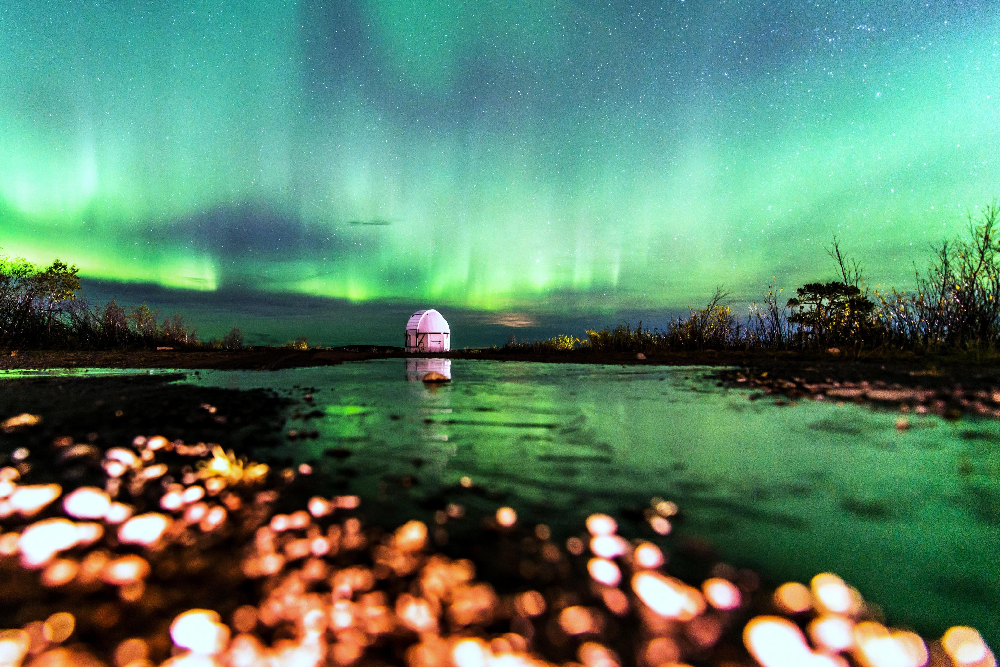

The Last Days of Venus as the Evening Star
That's not a young crescent Moon poised above the hills along the western horizon at sunset. It's Venus in a crescent phase. About 54 million kilometers away and less than 20 percent illuminated, it was captured by telescope and camera on September 30 near Bacau, Romania. The bright celestial beacon is now languishing in the evening twilight, its days as the Evening Star in 2018 coming to a close. But it also grows larger in apparent size and becomes an ever thinner crescent in telescopic views. Heading toward an inferior conjunction (non-judgmental), the inner planet will be positioned between Earth and Sun on October 26 and lost from view in the solar glare. At month's end a crescent Venus will reappear in the east though, rising just before the Sun as the brilliant Morning Star.